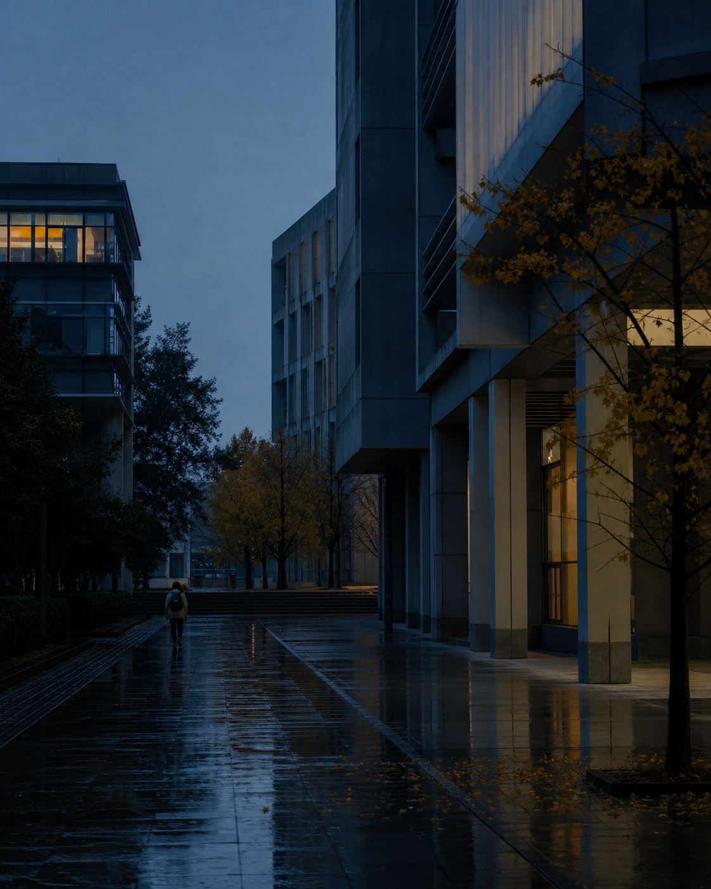

理解模型如何推理，也关心人如何与它协作。
模型行为、推理界面、机器智能的可用性与边界。

这里不急着给出完整答案，而是保存问题、过程与阶段性的判断。
我就读于南京大学匡亚明荣誉学院。学习之外，我也通过摄影、写作和网页实验，训练自己观察世界与组织信息的方式。
它们不是静态标签，而是我用来提出问题、搭建方法和检验想法的入口。
模型行为、推理界面、机器智能的可用性与边界。
抽象、算法、系统与严谨的问题建模。
界面、媒介系统、视觉实验与交互叙事。
此处将收录课程项目、研究尝试、软件实验与阶段性成果。